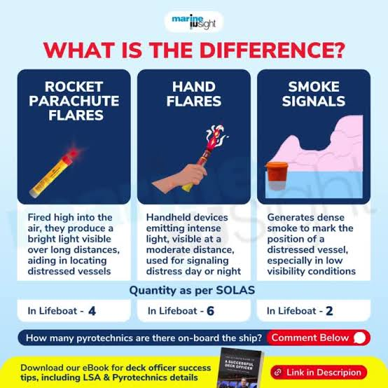

Dalam situasi bencana seperti gempa bumi, banjir, atau tsunami, penting untuk tetap tenang dan mengetahui langkah penyelamatan diri. Halaman ini memberikan panduan yang jelas dan praktis untuk membantu bertindak dengan cepat dan aman dalam berbagai kondisi bencana.
Langkah-langkah pemasangan tenda :
Pilih lokasi yang aman dan strategis
Pilih tempat yang datar, tidak becek, dan tidak berada di jalur air seperti dekat sungai atau cekungan. Hindari juga area di bawah pohon rapuh agar lebih aman.
Bersihkan dan siapkan area
Singkirkan batu, ranting, atau benda tajam lainnya. Area yang bersih akan membuat tenda tidak mudah rusak dan lebih nyaman untuk digunakan.
Bentangkan alas tenda (groundsheet)
Letakkan alas tenda sesuai posisi yang diinginkan. Pastikan tidak ada bagian alas yang keluar dari ukuran tenda agar tidak menampung air hujan.
Rakit dan pasang tiang tenda
Sambungkan tiang-tiang hingga membentuk rangka panjang, lalu masukkan ke bagian tenda yang tersedia. Biasanya dipasang menyilang hingga membentuk struktur yang kokoh.
Dirikan dan kaitkan badan tenda
Setelah tiang terpasang, angkat hingga tenda berdiri. Kaitkan klip atau pengait ke tiang agar bentuk tenda stabil.
Pasang dan kencangkan pasak
Tancapkan pasak di setiap sudut tenda dengan posisi miring agar kuat. Tarik tali tenda secukupnya hingga tenda terasa kencang dan tidak goyang.
Pasang flysheet (penutup luar)
Pasang penutup bagian atas tenda untuk melindungi dari hujan dan angin. Pastikan terpasang dengan benar dan tidak terlalu menempel pada tenda utama.
. Periksa kembali kestabilan tenda
Cek semua bagian : tiang, pasak, dan tali. Pastikan semuanya terpasang dengan kuat agar tenda aman digunakan.
Langkah-langkah menyalakan api unggun :
Pilih lokasi yang aman
Cari tempat terbuka yang jauh dari tenda, rumput kering, dan benda mudah terbakar. Jika bisa, gunakan tanah kosong atau area yang sudah pernah dipakai untuk api unggun.
Bersihkan area api
Bersihkan tanah dari daun kering, ranting, dan sampah di sekitar titik api. Buat lingkaran kecil dari batu sebagai pembatas agar api tidak menyebar.
Siapkan bahan bakar
Kumpulkan bahan dalam 3 jenis :
Pemantik : daun kering, kertas, rumput kering
Ranting kecil : untuk memperbesar api awal
Kayu besar : untuk menjaga api tetap menyala lama
Susun bahan bakar dengan benar
Gunakan susunan sederhana seperti bentuk segitiga (teepee) :
Letakkan pemantik di tengah
Susun ranting kecil mengelilingi seperti tenda
Sisakan ruang agar udara bisa masuk
Nyalakan api dari bagian bawah
Gunakan korek atau alat pemantik untuk menyalakan bagian bawah. Jika tidak ada korek, kamu bisa menggunakan alat pemantik lain seperti batu api (flint & steel) atau ferro rod dengan cara digesek hingga menghasilkan percikan api ke bahan kering seperti daun atau kertas. Api akan mulai dari percikan kecil, lalu naik ke atas dan membakar ranting kecil terlebih dahulu hingga semakin besar.
Tambahkan kayu secara bertahap
Setelah api mulai stabil, tambahkan kayu yang lebih besar sedikit demi sedikit. Jangan langsung banyak agar api tidak mati.
Jaga api tetap terkendali
Pastikan api tidak terlalu besar. Selalu awasi dan jangan ditinggalkan tanpa pengawasan.
Matikan api dengan benar setelah selesai
Siram dengan air atau tutup dengan tanah hingga benar-benar padam (tidak ada bara atau asap).

src : Marine Insight
Flare merupakan alat sinyal darurat yang digunakan untuk memberi tanda kepada orang lain saat membutuhkan bantuan. Terdapat tiga jenis utama, yaitu hand flare, smoke flare, dan parasut flare, yang digunakan sesuai kondisi.
Hand Flare (Flare Tangan)
Digunakan saat : pada malam hari agar cahayanya terlihat jelas dari jarak jauh.
Cara Pemakaian :
Pegang bagian bawah (handle) dengan kuat
Jauhkan dari tubuh dan wajah
Tarik pin atau gesek bagian pemantik (tergantung jenis)
Setelah menyala, arahkan ke atas atau ke samping
Angkat setinggi mungkin agar mudah terlihat
Pegang sampai flare habis menyala
Smoke Flare (Flare Asap)
Digunakan saat : pada siang hari untuk menghasilkan asap berwarna yang mudah terlihat.
Cara Pemakaian :
Pegang flare di bagian bawah
Pastikan posisi berdiri di tempat terbuka
Tarik pin atau nyalakan sesuai mekanisme
Letakkan di tanah atau pegang dengan posisi menjauh
Biarkan asap keluar dan menyebar ke udara
Pastikan asap terlihat jelas dari atas atau jauh
Parasut Flare (Aerial Flare)
Digunakan saat : di tempat yang luas dan tanpa halangan di atas agar dapat meluncur tinggi dan terlihat dari jarak yang sangat jauh.
Cara Pemakaian :
Pegang alat dengan posisi mengarah ke atas
Pastikan tidak ada orang atau benda di atas
Pegang dengan stabil menggunakan dua tangan jika perlu
Tarik atau tekan pemicu sesuai alat
Flare akan meluncur ke udara dan menyala di langit
Amati arah flare dan pastikan terlihat jelas